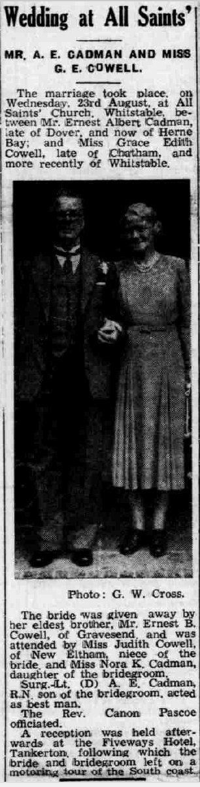
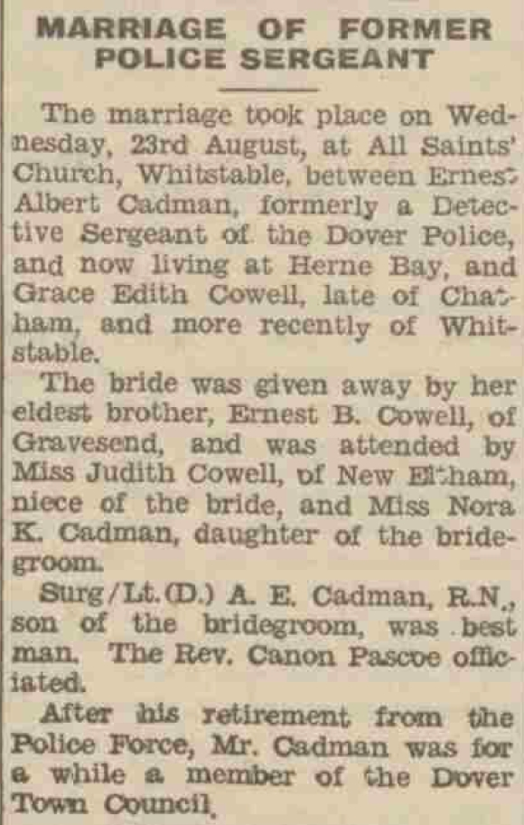
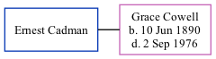

Ernest Albert Cadman
[ Home ] | [ Calendar ] | [ Surnames Index ] | [ Family History ]Ernest Cadman, the husband of Grace Edith Cowell (the third cousin twice-removed on the mother's side of Nigel Horne), and married Grace (a cashier) at All Saints Church, Whitstable, Kent, England on Aug 23, 19501.
Citations
- England & Wales Marriages 1837-2005 - Findmypast
Media
Whitstable Times and Herne Bay Herald 09 September 1950

Dover Express 08 September 1950

England & Wales marriages 1837-2005 - BMD/M/1950/3/AO/000235/126
Family Tree
Generated by ged2site. Last updated on Nov 13, 2024